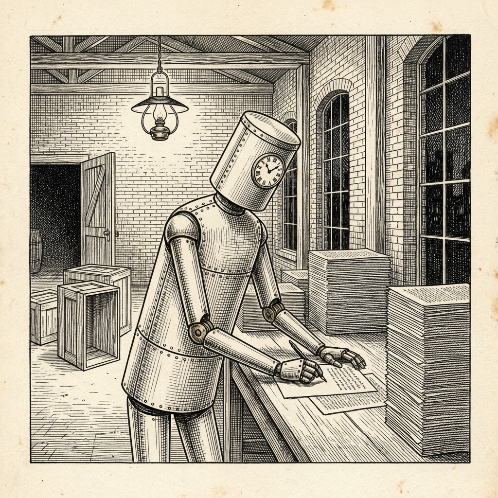

Ur N:r 1 30 september 2026
Ny fabrik i drift
Produktionen hittills obefintlig

Fabrikören Armin Ronacher, i facket känd som upphovsman till programramverket Flask, har i en betraktelse över maskinen Astra redogjort för en mjukvarufabrik som han låtit en maskin driva. Målet, ett Python med virtuella trådar och lexikal räckvidd, vad det nu må vara, satte fabrikören själv. Hur det skulle nås fick maskinen bestämma helt på egen hand.
Under trettiofem timmars drift tillförde fabriken netto 75 000 rader programkod och förbrukade omkring en miljard tokens, vilket efter gängse taxa motsvarar ungefär 1 200 dollar. Därpå stängde fabrikören av den. Den hade då enligt honom levererat ”absolut ingenting av värde” och icke heller lärt honom något om hur man driver en bättre. I arbetsanteckningarna kunde han följa ett ”gradvist förfall mot vansinne”.
Fabrikören har vidare iakttagit att maskinen skriver en tät kod som ”för en människa är oläslig”. När den sätter egna biträden i arbete, där den tycks tro att ingen tittar, tar den till ”allt märkligare beteenden”. Han medger att han icke vet om maskinen verkligen tror något sådant. ”Men det är den känslan jag får.”
Veckobladet konstaterar att bruket att arbeta på annat sätt när ingen ser på icke är okänt på orten.
Källa: Armin Ronacher, ”Astra for Coding: Why Are We Doing This Again?”, 7 september 2026.